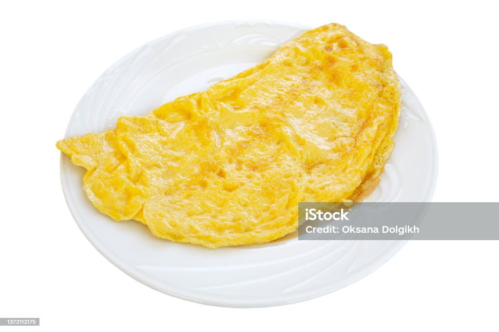

Basic Omelette

Description:
Sometimes you have no time to cook up a full breakfast, which
is where a simple omelette comes in, since it's quick and easy
to cook.
Ingredients:
Steps:
-
Preheat oil at medium temperature in a sizable pan.
-
Crack open eggs into a big enough bowl and lightly whisk them
until mixed well.
-
Pour bowl of whisked eggs into heated pan and allow the bottom
of the omelette to cook. Check the bottom of it by lifting it
with a spatula to make sure it doesn't burn.
-
Flip the omelette when the bottom has cooked well enough and
make sure to check the other side doesn't burn.
-
Turn the heat off when the omelette is completely cooked and
transfer to a plate to cool down.
-
When cooled down enough, enjoy. Can be served with tomato sauce.